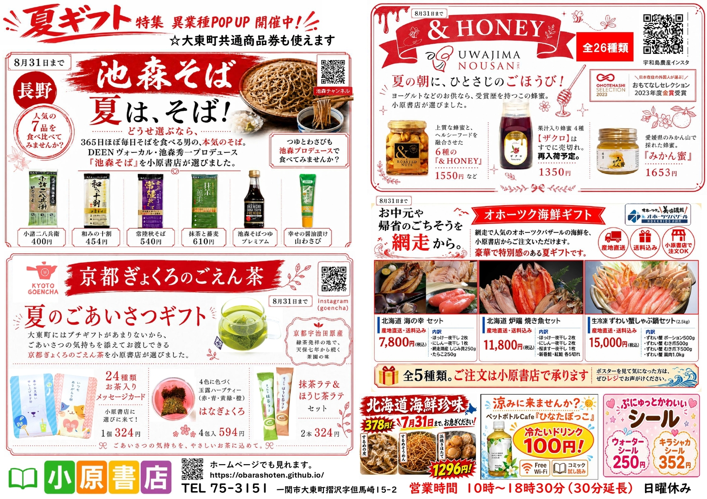

いつもありがとうございます。小原書店です。
7月から新しくスタートした「4つの異業種ポップアップ」。
8月31日まで開催しております！
チラシをご覧いただけます！
ぜひ以下の写真をタップしてくださいm(_ _)m
月曜日から土曜日 10時から18時30分まで
日曜日 お休み
一関市大東町興田出身の佐藤博さんと猿沢出身の菅原将樹さん（第23章）が共同執筆者としてかかわっていて、大東出身の2人が関係する書籍です。
2026/6/21付の岩手日報でも紹介されていました。
岩手15年の復興検証をベースに、未来の災害に備える防災を全国に発信する、「いわて防災復興研究会」を中心とした調査研究の成果です。
著者の岩崎まさえ先生はお隣の奥州市出身で、実際に岩手県立図書館や奥州市立水沢図書館で「郷土史のレファレンス（調査相談）」を担当されていた元司書さんです。まさに岩手の図書館事情と郷土史を知り尽くした方が書いた、デビュー単行本となります。
物語は、図書館で職場体験をする主人公が、謎の少年から「不思議な記号」についての調べものを依頼され、南部藩の百姓一揆の謎に迫っていくという、極上の「図書館ミステリー」です。
総会シーズン、経費半減！カラーコピーも30円。
画像をピンチイン（指で拡大）して細かい内容までご覧いただけます。
